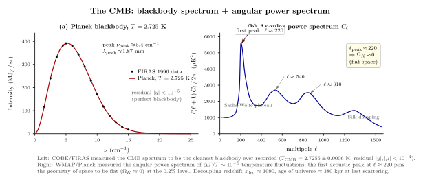

CMB 是宇宙最早的快照吗?
把电视机调到没有信号的频道, 屏幕的"雪花"里大约 1% 来自 CMB 光子直接进入了你的天线. 这个事实 — 你家客厅里也能"听到"宇宙诞生的回声 — 是 20 世纪宇宙学最壮观的实验结果之一. 上一节我们讨论了暗能量, 它告诉我们今天的宇宙在加速膨胀; 这一节我们把镜头摇到反方向, 摇到时间之箭的另一端: 那里有一张几乎不变的快照, 拍摄时间是 universe 年龄 $\sim 380000$ 年. 它是我们能直接看到的最早一层光.
这张快照的特殊之处不在于它"早", 而在于它异常干净: 频谱是教科书级的 Planck 黑体 (FIRAS 测到偏离 $\lt 10^{-4}$), 各向同性到 $10^{-5}$ 量级. 把它的温度涨落作球谐展开, 得到的功率谱 $C_\ell$ 是一串声学峰, 每一个峰位与峰高都把宇宙学参数 (空间曲率、重子密度、暗物质密度、Hubble 常数) 钉到几个 percent. 这是为什么 CMB 被称为"精度宇宙学"的诞生之地.
一、复合: 光子从此自由飞行
把宇宙的钟向后拨. 现在 $T_0\approx 2.725$ K, 红移 $z=0$. Friedmann 方程告诉我们辐射主导期 $T\propto 1/a\propto 1+z$, 所以红移 $z$ 处的温度
$$ T(z) \;=\; T_0\,(1+z). \tag{1} $$
当 $z\sim 1100$ 时 $T\sim 3000$ K — 大约 $0.3$ eV, 远低于氢的电离能 $13.6$ eV. 你也许会问: 既然温度远低于电离能, 为什么复合发生得这么晚? 因为光子数远多于重子数 (约 $10^9$ 倍), 即使热平衡的尾巴上也有足够多 $\gt 13.6$ eV 的光子去维持电离. 严格的 Saha 方程平衡条件给出 $kT\sim 0.3$ eV 时电离度才显著下降; 解非平衡方程 (Peebles 1968) 让 $z_{\rm dec}\approx 1090$.
这是我们看 CMB 的"最后散射面" (last-scattering surface). 在 $z\gt 1090$ 时, 光子在自由电子海里 Thomson 散射, mean-free-path 远小于 Hubble 长度, 宇宙不透明; 在 $z\lt 1090$ 时, 自由电子被结合进中性氢, 光子的 mean-free-path 暴涨到大于宇宙年龄, 宇宙突然变透明. 我们今天接收到的 CMB 光子, 就是从 $z\approx 1090$ 那个球壳出发, 一路自由飞行 137 亿年到达地球的. 你看不到比它更早的电磁波 — 因为更早的光子还没"来得及解耦". (中微子比它更早解耦, 但难以观测; 引力波在更早期的暴胀阶段就已自由传播, 但目前还没探测到原初引力波.)
"最后散射面"这个名字容易误导. 它不是某个固定的几何曲面, 而是一个统计表面: 每个光子最后一次 Thomson 散射的位置在视线方向上有大约 $\Delta z\sim 80$ 的弥散, 对应固有厚度 $\sim 100$ Mpc. 这个厚度比我们能分辨的角度尺度小得多, 所以实操上把它当一张球面来用. 复合前后温度从 $4000$ K 下降到 $2500$ K 这一段时间里, 中性氢比例从 10% 涨到 99%, 自由电子的数密度断崖式下跌, 散射深度 $\tau\propto \int n_e\sigma_T\,c\,dt$ 从 $\gg 1$ 滑到 $\ll 1$. 这就是我们能看到这堵"墙"的物理原因.
二、黑体谱: 为什么膨胀不破坏它
解耦时光子是热平衡分布, 单位频率单位立体角的强度 (Planck 公式)
$$ B_\nu(T) \;=\; \frac{2 h\nu^3}{c^2}\,\frac{1}{\exp(h\nu/kT)-1}. \tag{2} $$
这是 Planck 1900 年那个救物理一命的公式. 现在轮到一个不太显然的事实: 膨胀宇宙里黑体谱保形, 只是温度按 $1/a$ 标度. 证明只需注意两件事: (a) 红移把每个光子的频率 $\nu\to\nu/(1+z)$; (b) 体积 $V\to V(1+z)^3$, 所以频率元 $d\nu$ 与立体角的相空间因子组合让 $B_\nu(T)/T^3$ 在频率 $\nu/T$ 不变的轨道上守恒. 严格地, 用 $\nu\to\nu(1+z)$ 同时 $T\to T(1+z)$, 公式 (2) 不变 — 黑体谱被映到黑体谱, 只是温度变了. 这就是为什么 CMB 在今天还是干净的 Planck 谱.
1990 年 COBE 卫星的 FIRAS 仪器把这件事测到了不可思议的精度. FIRAS 用一个绝对零度的内部参考黑体作 Michelson 干涉对比, 在 9 分钟内宣布: CMB 的频谱与 $T=2.725$ K 的 Planck 黑体在 $60$ GHz 到 $600$ GHz 的整个测量带宽上偏离不超过观测线的线宽. 其后 25 年的归零分析给出
$$ T_{\rm CMB} \;=\; 2.7255 \pm 0.0006~\text{K} \quad (\text{FIRAS final, Fixsen 2009}). $$
偏离 Planck 谱的上限 $|y|\lt 10^{-5}$ ($y$ 参数, 描述 Compton 散射造成的谱形畸变), $|\mu|\lt 9\times 10^{-5}$ (化学势). 这是物理史上测得最完美的黑体 — 它的存在本身就是热宇宙的铁证: 一定有某段时间宇宙曾完全热平衡, 否则不会有这么纯的 Planck 谱.
顺手算一个数. 公式 (2) 在低频 $h\nu\ll kT$ 极限退到 Rayleigh-Jeans $B_\nu\to 2\nu^2 kT/c^2$, 在高频极限退到 Wien 截断 $B_\nu\to (2h\nu^3/c^2)\exp(-h\nu/kT)$. 对 $T=2.725$ K, $kT/h\approx 56.8$ GHz, 谱峰位于 $\nu_{\rm peak}\approx 2.82\,kT/h\approx 160$ GHz, 对应波长 $\lambda_{\rm peak}\approx 1.87$ mm — 这恰好在卫星探测器最舒服的微波波段. 把强度积起来, 总能量密度 $u=aT^4$, 其中 $a=4\sigma/c\approx 7.57\times 10^{-16}$ J/m$^3$/K$^4$, 给出今天 CMB 的能量密度 $u_\gamma\approx 4.17\times 10^{-14}$ J/m$^3$ — 占今天宇宙总能量密度的 $\Omega_\gamma\approx 5\times 10^{-5}$. 看上去微不足道, 但回到 $z\sim 3400$ 之前, $u_\gamma\propto a^{-4}$ 主导, $\rho_m\propto a^{-3}$ 跟不上, 这就是辐射主导期的转折.
三、$\Delta T/T\sim 10^{-5}$: 角功率谱与第一声学峰

FIRAS 把 CMB 的平均谱钉死到完美黑体, 但它不是完全各向同性. COBE 的另一台仪器 DMR 1992 年宣布: 在 $7^\circ$ 角分辨率下检测到 $\Delta T/T\approx 10^{-5}$ 的方向性涨落 — 那一年 Hawking 称这是"本世纪最重要的发现, 如果不是所有世纪". 为什么? 因为这就是早期宇宙密度起伏的快照, 它告诉我们今天看到的星系、星系团是从哪里长出来的.
把温度涨落作球谐展开 $\Delta T(\hat n)/T = \sum_{\ell m} a_{\ell m} Y_{\ell m}(\hat n)$, 角功率谱定义为 $C_\ell = \langle |a_{\ell m}|^2\rangle_m$. 多极矩 $\ell$ 对应角度尺度 $\theta\approx 180^\circ/\ell$. WMAP (2003) 与 Planck (2013, 2018) 测出来的 $C_\ell$ 是一串声学峰: 第一峰在 $\ell\approx 220$ (角度 $\sim 1^\circ$), 第二峰在 $\ell\approx 540$, 第三峰在 $\ell\approx 810$, 后面峰高逐渐衰减直到 Silk damping 截断. 这些峰来自光子-重子流体的声学振荡: 在复合前, 物质过密区被光子压力推, 又被引力拉回, 振荡频率 $\sim c_s k$, 其中 $c_s\approx c/\sqrt{3}$ 是辐射主导流体的声速. 复合那一瞬间所有正在振荡的模被"冻结", 不同 $k$ 处于不同振荡相位, 给出一系列峰.
第一峰位置最重要. 在复合时, 声学水平 (acoustic horizon) 是声波从 $z=\infty$ 走到 $z\approx 1090$ 走过的固有距离 $r_s\approx 150$ Mpc. 我们今天看到的角度 $\theta_*=r_s/D_A$, 其中 $D_A$ 是到最后散射面的角直径距离. 在平坦宇宙里 $D_A\approx 14000$ Mpc, 给出 $\theta_*\sim 1^\circ$, 对应 $\ell_*\approx \pi/\theta_*\approx 220$. 测到 $\ell\approx 220$ 就立刻给
$$ \Omega_K \;\equiv\; 1 - \Omega_m - \Omega_\Lambda \;\approx\; 0.0007\pm 0.0019, $$
也就是空间在 $0.2\%$ 的精度内是平坦的 (Planck 2018). 如果空间是闭合的 ($\Omega_K\lt 0$), 第一峰会向小 $\ell$ 移; 如果开放, 向大 $\ell$ 移. 我们看到的恰恰是欧氏几何的位置. 这件事在 2000 年 BOOMERanG 气球实验首次清晰报告时, 是 inflation 模型的一次戏剧性确证 — 暴胀的核心预言之一就是 $\Omega_K\to 0$.
第二峰与第一峰的高度比是测重子密度 $\Omega_b h^2$ 的标尺. 物理上, 重子的惯性把"压缩相"压得比"反弹相"更深, 这两相对应的多极矩交替出现, 使得奇数峰 (1, 3) 比偶数峰 (2, 4) 高. 重子越多, 不对称越明显. Planck 测得 $\Omega_b h^2\approx 0.0224\pm 0.0001$, 与独立的 BBN 测定 ($D/H$ 丰度法) 一致到 $1\%$ — 这是 Big Bang 框架内最干净的两条独立路径会师. 第三峰高度则约束冷暗物质密度 $\Omega_c h^2\approx 0.120$: 没有冷暗物质, 重子-光子流体的振荡振幅会被引力坑的衰减拖低, 跟数据完全对不上.
四、Penzias-Wilson, COBE, Planck: 一段意外史
预言 CMB 的第一人是 Alpher 与 Herman, 1948 年 — 他们与 Gamow 一起算 Big Bang 元素合成 (BBN), 顺手算出今天残留的辐射温度应该是 $\sim 5$ K. 这个数字在当时近乎科幻, 没人接着算. 1964 年 Princeton 的 Dicke 与 Peebles 重新做了一遍, 决定造一台天线试一试.
同一年, 50 公里外的 Bell 实验室, Penzias 与 Wilson 调试一台为通信卫星设计的喇叭天线, 反复扣掉所有已知噪声后剩余 $3.5\pm 1$ K 的"嗡嗡声", 各向同性, 不随昼夜变化. 他们怀疑是天线里筑巢的鸽子的粪便 (他们真的去清理了鸽屎, 还把鸽子赶走). 噪声仍在. 1965 年初他们在系列电话里听说 Princeton 那边在造一台找 CMB 的天线, 立刻意识到他们已经"提前"测到了. 两组人达成默契, 同年 Astrophys. J. 同期发表两篇背靠背论文: Dicke-Peebles-Roll-Wilkinson 写理论, Penzias-Wilson 报告 $T\approx 3$ K. Penzias 与 Wilson 1978 年共享 Nobel.
从 1965 到 1989, 地面与气球望远镜把 CMB 的频谱粗测到 $\pm 0.5$ K. 1989 年 11 月 18 日 COBE 升空, 1990 年 1 月 13 日 FIRAS 与 DMR 同时给出第一批数据 — 频谱完美黑体, 温度涨落 $\sim 10^{-5}$. Mather (FIRAS) 与 Smoot (DMR) 2006 年共享 Nobel. 之后 WMAP (2001-2010) 把第一峰位置钉到 1% 精度; Planck (2009-2013, 数据分析到 2018) 把整个 $C_\ell$ 测到 cosmic-variance 极限. 整个 $\Lambda$CDM 模型的六个核心参数 (基本是 $\Omega_b h^2, \Omega_c h^2, h, \tau, n_s, A_s$) 几乎全部钉死在 percent 精度上.
这条时间线还有两个值得停下来想的细节. 一是 Penzias-Wilson 那时正在调试一台为 Echo 通信卫星设计的接收机, 完全不是为找 CMB 而造 — 真正的"偶然发现"教科书例子. 二是 Alpher 和 Herman 1948 年的预言曾被遗忘了将近 20 年, 部分原因是当时主流物理学家觉得 Big Bang 是哲学猜想, 另一部分原因是 Hoyle 把"Big Bang"这个名字本来当作贬义词在 BBC 节目里嘲讽提出来的. 1965 年之后, 这个嘲讽词反而成了新范式的官方术语, 而稳态宇宙学慢慢退出主流舞台. 这是 20 世纪科学史上"实验数据强行翻盘理论偏好"的最干净案例之一.
五、为什么 CMB 是宇宙学的"罗塞塔石碑"
把 CMB 给我们的事实列一遍, 看看它如何同时回答了多个独立问题:
(a) 宇宙曾经热. 完美的 Planck 谱要求一段完全热平衡时期 — 这立即否决了 1948 年以前流行的稳态宇宙学.
(b) 宇宙在膨胀. CMB 偶极矩 $\Delta T\sim 3.4$ mK 是地球绕银河中心 + 银河系本身相对于 CMB rest frame 的运动 ($\sim 370$ km/s) 造成的多普勒. 这定义了一个"宇宙学优选参考系" (CMB rest frame), 第一次让"绝对运动"在不违反 SR 的意义下重新有了实验内涵.
(c) 空间几乎平坦. 第一声学峰 $\ell\approx 220$ 给 $\Omega_K\approx 0$ 到 $0.2\%$.
(d) 重子密度 $\Omega_b h^2\approx 0.0224$ — 由第二/第一峰高比定. 它与独立的 BBN 测定一致, 是大爆炸理论的核心交叉验证 (下一节我们就讲 BBN).
(e) 暗物质存在 $\Omega_c h^2\approx 0.120$. 没有冷暗物质, 重子声学振荡的振幅与峰位无法同时拟合.
(f) Hubble 张力. CMB 推断的 $H_0\approx 67.4$ km/s/Mpc 与本地距离阶梯 (SH0ES) 测出的 $\approx 73$ km/s/Mpc 相差 $\sim 5\sigma$ — 这是当代宇宙学最尖锐的悬案. 暗能量本质、暴胀模型、新物理都在嫌疑名单上.
(g) 暴胀的指纹. 涨落谱的标量谱指数 $n_s\approx 0.965\ne 1$ (轻微红倾), 与最简单的单场缓慢滚动暴胀预言一致; 张量-标量比 $r\lt 0.06$ 把许多暴胀模型排除. 原初引力波的 B 模偏振是下一代实验 (CMB-S4, LiteBIRD) 的目标.
(h) 再电离时刻. 第一代恒星点亮后释放的紫外光把宇宙重新电离 ($z_{\rm reion}\approx 7$-$8$), 在 CMB 大尺度偏振上留下印记 — 光学深度 $\tau\approx 0.054$. 这把宇宙黎明时刻定到了 redshift 区间 $6$-$10$, 与 James Webb 望远镜直接看到的最早期星系交相验证.
把所有这些信息塞进一张图里 — 那就是现代 $\Lambda$CDM 模型. 它有六个核心参数, 已经能拟合从 CMB 到 BAO 到 Type-Ia 超新星到弱引力透镜的一切观测. 它也有缺陷: $H_0$ 张力、$\sigma_8$ 张力、暗能量到底是不是真正的 $\Lambda$, 这些是后面几节会拐回来谈的话题.
小结
这一节我们打开了 CMB 这张宇宙最早的电磁快照. 1965 年 Penzias 与 Wilson 在 Bell 实验室那台喇叭天线里偶然听到 $\sim 3$ K 的嘶嘶声, 经过反复擦掉鸽屎仍然挥之不去, 与 Princeton 的 Dicke-Peebles 同年同期论文配合, 一锤定音地证明了热宇宙. 1990 年 COBE/FIRAS 把它的频谱钉到 $T_{\rm CMB}=2.7255\pm0.0006$ K 的完美 Planck 黑体 (公式 2), 黑体谱在膨胀宇宙里之所以保形, 是因为温度按 $T\propto 1/a$ 标度 (公式 1); 同一颗卫星的 DMR 与后来的 WMAP/Planck 把 $\Delta T/T\sim 10^{-5}$ 的温度涨落作球谐展开, 测出一整串声学峰. 第一峰 $\ell\approx 220$ 直接告诉我们空间在 $0.2\%$ 精度内平坦 ($\Omega_K\approx 0$); 后面几个峰的高度比定下了 $\Omega_b h^2\approx 0.0224$ 与 $\Omega_c h^2\approx 0.120$. 复合时刻 $z_{\rm dec}\approx 1090$ ($T\approx 3000$ K) 是我们能"看到"的最早一层 — 比它更早, 宇宙对电磁波不透明. CMB 把宇宙学从思辨升级为精度科学, 但同时留下了 Hubble 张力、$\sigma_8$ 张力、暴胀模型挑选这些悬案. 下一节我们倒着再往前走一步: 复合之前那一段, 宇宙在做什么? 答案是 — 锻造前几个轻元素. 那就是 BBN 的故事.
▲